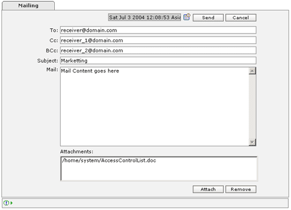

| Mailing |
| How to create mail job? |
|
 |
Create Mail |
| General Mail Information: |
| Name | Min Length | Max Length | Description | Required /Optional |
|---|---|---|---|---|
| Date | - | - | Select the date and time when the mail has to be delivered. | Required |
| To: | - | - | Email address of the recipient. | Required |
| Cc: | - | - | Email address of the recipient who will receive a carbon copy of the mail. | Optional |
| BCc: | - | - | Email address of the recipient who will receive a blind carbon copy of the mail. | Optional |
| Subject: | - | - | Subject of the message. | Optional |
| Mail: | - | - | The message written in plane text. | Optional |
| Attachments: | - | - | A list of all the attachments. | Optional |
| Attach: | - | - |
|
Optional |
| Remove: | - | - | Press 'Remove' to remove the selected file(s) from the 'Attachments' list box. | |
| Send | - | Press 'Send' to dispatch the mail job to the scheduler. | ||
| Cancel | - | - | Press 'Cancel' to abort sending mail. |